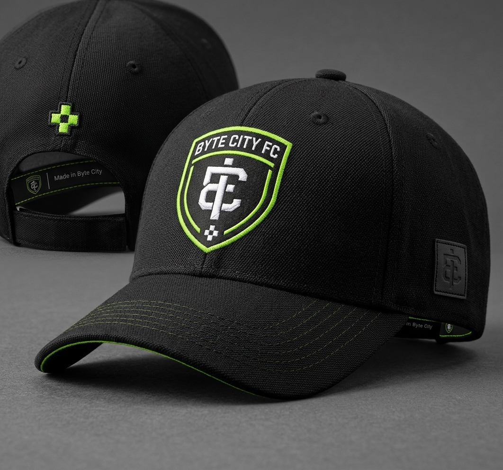
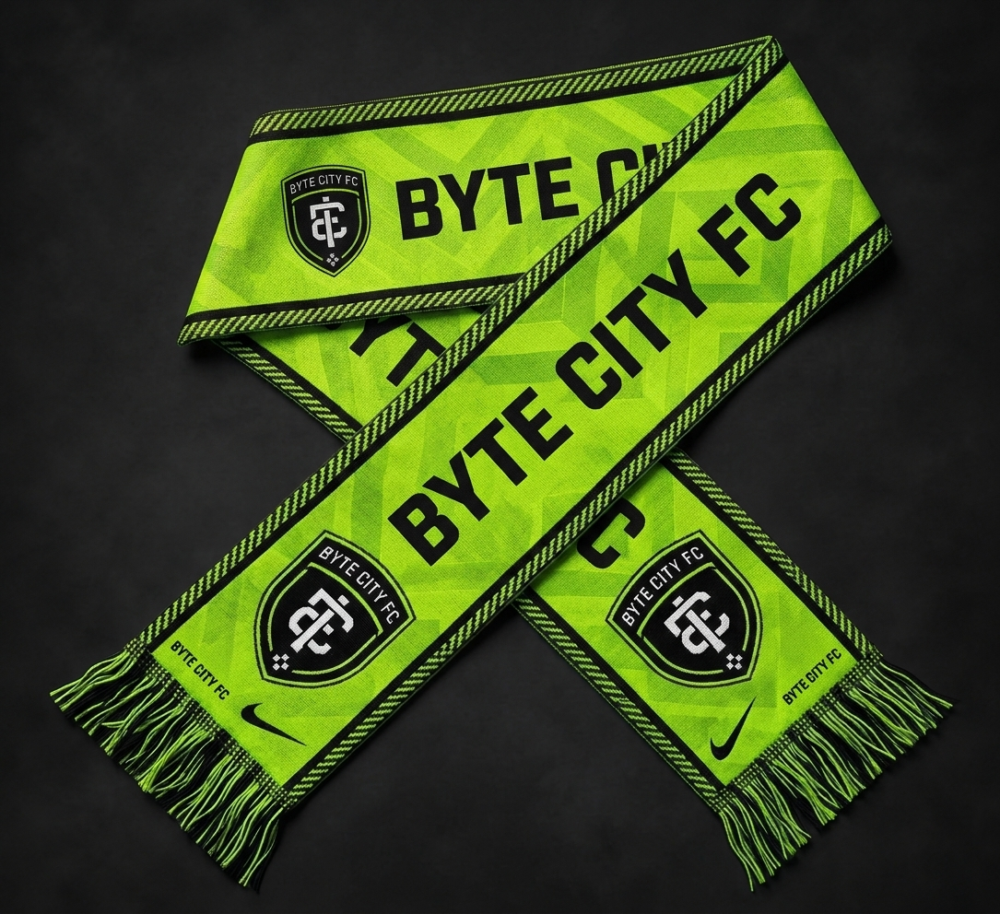
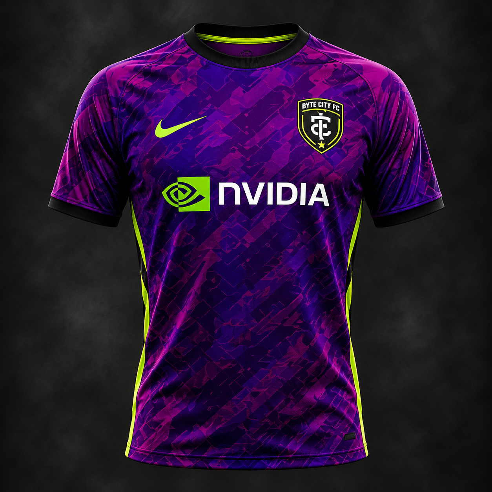

01 · HOMELocal


Primera equipación
La camiseta local luce la identidad de Byte City con un diseño pensado para animar en cada partido.
Tienda oficial · Temporada 2026/27
Los colores que nos unen. Descubre las equipaciones y lleva Byte City contigo dentro y fuera del Bit Arena.
Descubrir la colecciónLa colección oficial
Tres maneras de defender nuestros colores. Cada ficha incluye las vistas frontal y trasera.
La camiseta local luce la identidad de Byte City con un diseño pensado para animar en cada partido.


Nuestros colores visitantes, con el escudo del club y un acabado cómodo para los días de partido.


Una propuesta alternativa para quienes quieren apoyar al equipo con un estilo diferente.
El orgullo también se entrena
Un detalle de cada artículo abre su ficha con galería, características y precio.

Accesorios
29,95 €
Balón con los colores del club, pensado para entrenar y disfrutar del fútbol en cualquier lugar.
Material: cubierta sintética · Precio: 29,95 €

Accesorios
19,95 €
Un básico para completar tu look y representar al club en la grada o en la calle.
Material: tejido resistente · Precio: 19,95 €

Grada
17,95 €
La bufanda para acompañar al equipo y llenar de color las gradas del Bit Arena.
Material: tejido suave · Precio: 17,95 €

Ropa
49,95 €
Sudadera negra con identidad del club, ideal para antes y después del partido.
Material: tejido cálido · Precio: 49,95 €

Entrenamiento
39,95 €

Prenda de entrenamiento con los colores del club para acompañarte en cada sesión.
Material: tejido deportivo · Precio: 39,95 €